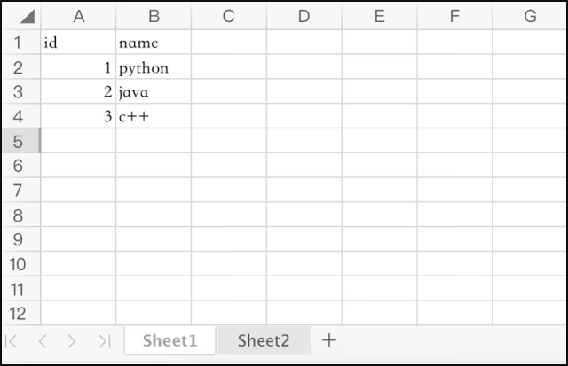
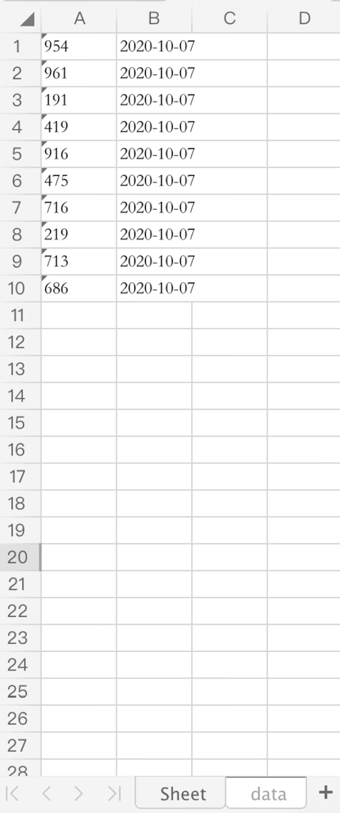

首页 > 编程笔记
Python操作Excel的简明教程
在生活和工作中，我们不可避免地会跟数据“打交道”，用 Excel 存储测试数据以及测试结果是非常常见的。
其实，Python 中有很多专门针对 Excel 进行数据处理的库，比如 xlrd、xlwt、xlutils、openpyxl 以及大数据中常用的 pandas 等，它们的侧重点各有不同，常见的操作 Excel 的库和其作用如表1所示。
对于上表中的库，我们只需要了解，以后可以根据不同的需要调用不同的库，这里不多解释。本文主要讲解的是用 openpyxl 对 Excel 中的数据进行处理。
openpyxl 的安装命令如下所示：
Workbook 相当于一个文件，WorkSheet 就是文件里面的每个具体的表格，比如新建 Excel 文件里面的 Sheet1，一个 Workbook 里面有一个或多个 WorkSheet。WorkSheet 中的每个单元格都是一个 Cell，Cell 有行和列的坐标。
1) 创建Workbook：
2) 导入Workbook：
3) Workbook 的属性：
4) Workbook 的方法：
2) WorkSheet 的属性:
3) WorkSheet 的方法：
2) 设置 Cell 的值：
3) Cell 的属性：
4) Cell 的方法：
[('954', '2020-10-07'), ('961', '2020-10-07'), ('191', '2020-10-07'), ('419', '2020-10-07'), ('916', '2020-10-07'), ('475', '2020-10- 07'), ('716', '2020-10-07'), ('219', '2020-10-07'), ('713', '2020-10-07'), ('686', '2020-10-07')]
查看生成的数据，如图2所示。
2) 范例代码的第 82~87 行，循环写入数据。
3) 范例代码的第 90 行，读取表单中所有的数据。
其实，Python 中有很多专门针对 Excel 进行数据处理的库，比如 xlrd、xlwt、xlutils、openpyxl 以及大数据中常用的 pandas 等，它们的侧重点各有不同，常见的操作 Excel 的库和其作用如表1所示。
| 库名 | 作用 |
|---|---|
| xlrd | 从 Excel 中读取数据，支持 XLS、XLSX 格式。 |
| xwt | 对 Excel 进行修改操作，不支持对 XLSX 格式的修改。 |
| xlutils | 在 xlrd 和 xlwt 中，对一个已存在的文件进行修改。 |
| openpyxl | 主要针对 XLSX 格式的 Excel 进行读取和编辑。 |
| pandas | 可对 CSV 文件进行操作，主要用于大数据分析。 |
对于上表中的库，我们只需要了解，以后可以根据不同的需要调用不同的库，这里不多解释。本文主要讲解的是用 openpyxl 对 Excel 中的数据进行处理。
openpyxl 的安装命令如下所示：
pip install openpyxl
首先介绍 Excel 的一些基本概念，如图1所示。

图1：Excel 的一些基本概念
图1：Excel 的一些基本概念
Workbook 相当于一个文件，WorkSheet 就是文件里面的每个具体的表格，比如新建 Excel 文件里面的 Sheet1，一个 Workbook 里面有一个或多个 WorkSheet。WorkSheet 中的每个单元格都是一个 Cell，Cell 有行和列的坐标。
1. 操作 Workbook 对象
获取 Workbook 对象的方式有两种，一种是创建一个新的，另一种是导入一个已存在的。1) 创建Workbook：
# 导入模块 from openpyxl import Workbook # 创建一个Workbook wb = Workbook() # 默认生成一个名为Sheet的WorkSheet
2) 导入Workbook：
# 导入模块 from openpyxl import load_workbook # 导入一个Workbook wb = load_workbook(filename = './empty_book.xlsx')
3) Workbook 的属性：
- sheetnames：返回所有 WorkSheet 的名称列表，类型为 list。
- worksheets：返回所有 WorkSheet 的列表，类型为 list。
- active：返回当前默认选中的 WorkSheet。
4) Workbook 的方法：
- get_sheet_names：同 sheetnames 属性。
- get_active_sheet：同 active 属性。
- get_sheet_by_name(name)：根据名称获取 WorkSheet。
- remove(worksheet)：删除一个 WorkShee，注意是 WorkSheet 对象，不是名称。
- save(filename)：保存到文件，有写入操作要记得保存。
2. 操作 WorkSheet
1) 获取 WorkSheet 对象：# 获取默认打开的WorkSheet ws1 = wb.active # 创建一个WorkSheet ws2 = wb.create_sheet() # 可传title和index两个参数 # 通过名称获取WorkSheet ws3=wb['Sheet1']
2) WorkSheet 的属性:
- rows：返回所有有效数据行，有数据时类型为 generator，无数据时类型为 tuple。
- columns：返回所有有效数据列，类型同 rows。
- max_column：有效数据最大列。
- max_row：有效数据最大行。
- min_column：有效数据最小列,起始为 1。
- min_row：有效数据最大行,起始为 1。
- values：返回所有单元格的值的列表,类型为 tuple。
- title：WorkSheet 的名称。
3) WorkSheet 的方法：
- cell(coordinate=None, row=None, column=None, value=None): 获取指定单元格或设置单元格的值。
3. 操作Cell
1) 获取 Cell 对象：
# 使用WorkSheet的cell方法
c1=ws.cell('A1')
c2=ws.cell(row=1,column=1) # 获取A1单元格
# 通过坐标获取Cell
c3=ws['A1']
# 获取多个
c3=ws['A1:E5'] # 返回多行数据，类型为tuple
2) 设置 Cell 的值：
# 直接使用WorkSheet的cell方法设置
ws.cell(row=1,column=1,value=10)
# 设置Cell对象的value属性
c1=ws.cell('A1')
c1.value=100
3) Cell 的属性：
- column：所在列，起始为1。
- row：所在行，起始为1。
- coordinate：所在坐标，如'A1'。
- parent： 所属的WorkSheet。
- value：单元格的值。
4) Cell 的方法：
- offset(row=0, column=0)：偏移。
4. 完整示例
下面看一个使用 Python 操作 Excel 的完整示例。
from openpyxl import load_workbook,Workbook
from openpyxl.worksheet.worksheet import Worksheet
import os
import random
from datetime import datetime
class ExcelManual:
def _ _init_ _(self, file_path):
self.file_path = file_path
if os.path.exists(file_path):
self.wb = load_workbook(file_path)
else:
self.wb = Workbook()
def select_sheet(self, name):
"""
选择表单
:param name: 表单名称
:return:
"""
if name in self.wb.sheetnames:
self.live_sheet = self.wb[name]
else:
self.live_sheet = self.wb.create_sheet(name)
return self.live_sheet
def read_cell_value(self, row, column):
"""
读取一个单元格的数据内容
:param row: 行
:param column: 列
:return:
"""
if isinstance(self.live_sheet, Worksheet):
return self.live_sheet.cell(row, column).value
def write_value_in_cell(self, row, column, value):
"""
往单元格中写入数据
:param row:行
:param column:列
:param value:值
:return:
"""
self.live_sheet.cell(row, column, value)
def read_row_value(self, row_num):
"""
读取一行的数据功能
:return:
"""
if isinstance(self.live_sheet, Worksheet):
max_row = self.live_sheet.max_row
if row_num > max_row:
print("行数超过表单中的最大行数")
return
max_column = self.live_sheet.max_column
data_list = []
for i in range(max_column):
data_list.append(self.live_sheet.cell(row_num, i + 1).value)
return data_list
def read_value_by_sheet(self, sheet_name):
"""
获取表单中的所有数据
:param sheet_name:
:return:
"""
current_sheet = self.wb[sheet_name]
if isinstance(current_sheet, Worksheet):
return list(current_sheet.values)
def close(self):
"""操作完一定要保存并关闭才有效"""
self.wb.save(self.file_path)
self.wb.close()
if _ _name_ _ == '_ _main_ _':
myExcel = ExcelManual("./data.xlsx")
myExcel.select_sheet("data")
for i in range(1,3):
for j in range(1,11):
if i==1:
myExcel.write_value_in_cell(j,i,str(random.randint(1,1000)))
else:
myExcel.write_value_in_cell(j, i, datetime.now().strftime("%Y-%m-%d"))
myExcel.close()
print(myExcel.read_value_by_sheet("data"))
运行结果：[('954', '2020-10-07'), ('961', '2020-10-07'), ('191', '2020-10-07'), ('419', '2020-10-07'), ('916', '2020-10-07'), ('475', '2020-10- 07'), ('716', '2020-10-07'), ('219', '2020-10-07'), ('713', '2020-10-07'), ('686', '2020-10-07')]
查看生成的数据，如图2所示。

图2：查看生成的数据
图2：查看生成的数据
范例分析
1) 范例代码中的 ExcelManual 对 Python 操作进行简单的封装：- _ _init_ _ 方法中如果路径存在就是加载 Excel 文件，否则是创建一个新的 Excel 文件。
- select_sheet 方法中如果表单名称存在就是选择此表单，否则是创建新的表单。
- read_cell_value 根据 row 和 column 获取指定的 Cell 值，row 和 column 是从 1 开始的。
- write_value_in_cell 根据 row 和 column 写入指定的值。
- read_row_value 根据 row_num 指定一行数据。
- read_value_by_sheet 读取表单中所有的数据。
2) 范例代码的第 82~87 行，循环写入数据。
3) 范例代码的第 90 行，读取表单中所有的数据。
关注公众号「站长严长生」，在手机上阅读所有教程，随时随地都能学习。内含一款搜索神器，免费下载全网书籍和视频。

微信扫码关注公众号